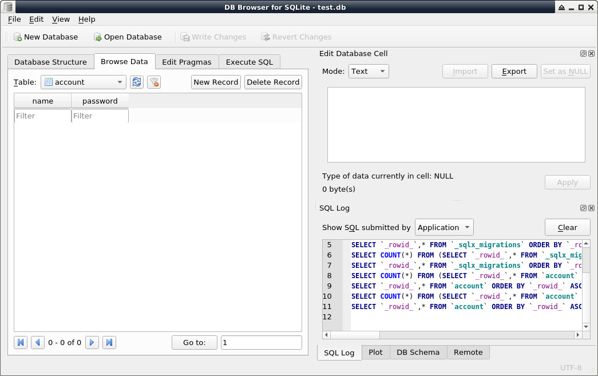
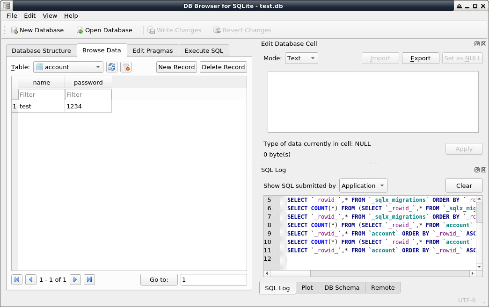

Steward
分享是一種喜悅、更是一種幸福
程式語言 - Rust - SQLite
參考資訊：
https://www.rust-lang.org/learn/get-started
https://ithelp.ithome.com.tw/articles/10272280
https://gitee.com/naylor_personal/rust-actix/tree/master/workspace/db
http://bzz.wallizard.com:8081/share/books/RUST/Programming%20Rust%202nd%20Edition.pdf
安裝SQLite
$ sudo apt-get install sqlite sqlitebrowser -y
建立Database
$ export DATABASE_URL="sqlite:test.db"
$ cd
$ sqlx migrate add test
$ vim migrations/xxx_test.sql
-- Add migration script here
CREATE TABLE account (
name TEXT PRIMARY KEY,
password TEXT NOT NULL
);
$ sqlx db create
$ sqlx migrate run
$ sqlitebrowser test.db

產生樣板
$ cargo new hello $ cp test.db hello $ cd hello
Cargo.toml
[package]
name = "hello"
version = "0.1.0"
edition = "2021"
[dependencies]
sqlx = { version = "0.5.7", features = [ "runtime-tokio-rustls", "sqlite" ] }
tokio = { version = "1.12.0", features = ["full"] }
anyhow = "1.0"
futures = "0.3"
src/main.rs
use sqlx::sqlite::SqlitePool;
#[tokio::main]
async fn main() -> anyhow::Result<()> {
let pool = SqlitePool::connect("sqlite:test.db").await?;
let user : &str = "test";
let pass : &str = "1234";
let _add = sqlx::query!(r#"insert into account(name, password) values($1, $2)"#, user, pass).fetch_all(&pool).await?;
Ok(())
}
執行
$ cargo run $ sqlitebrowser test.db
